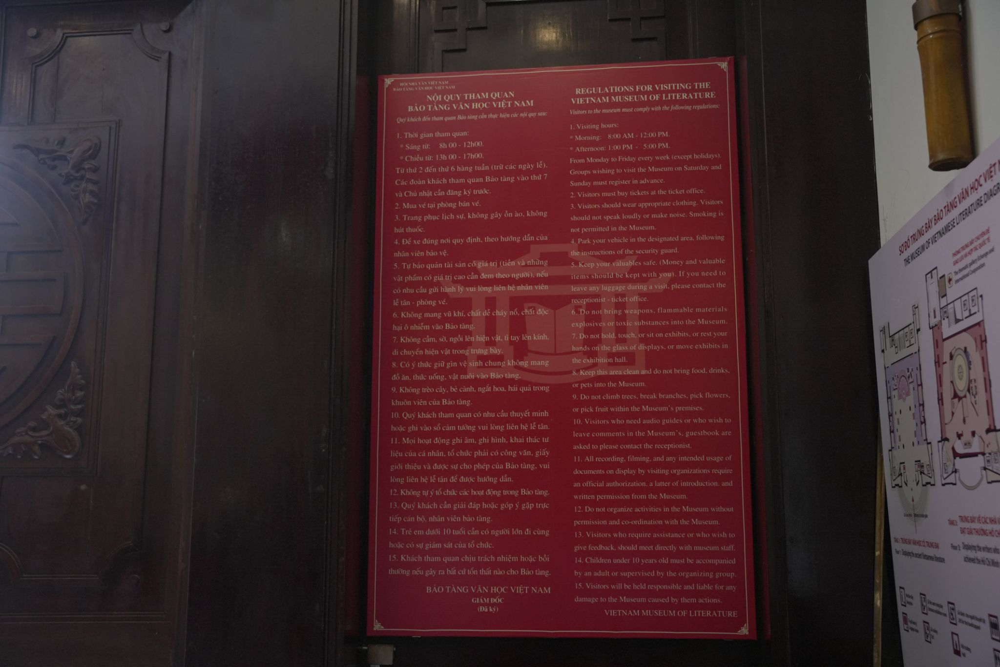
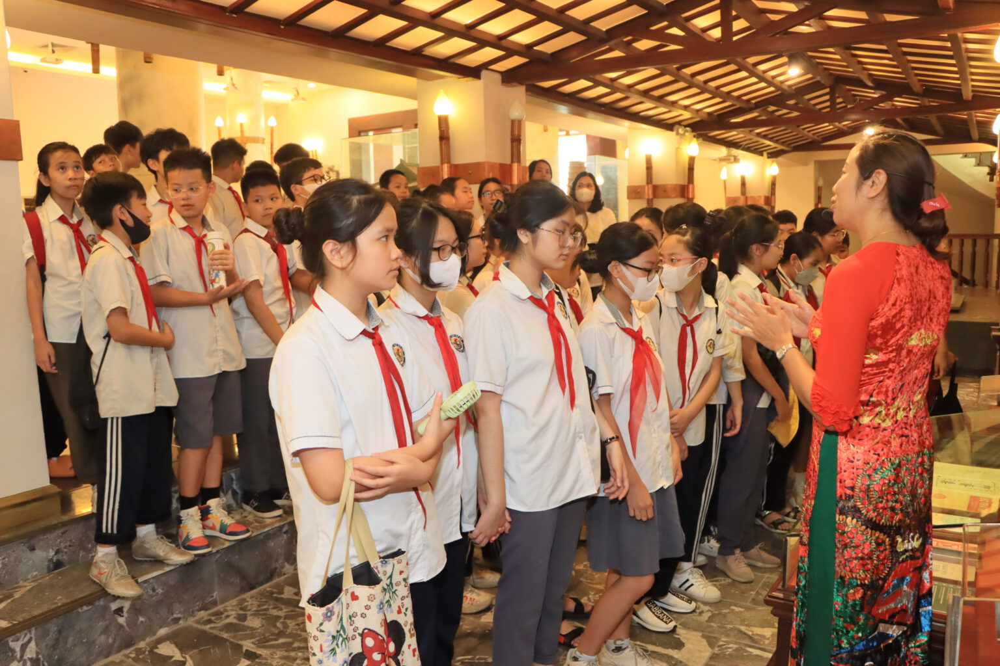
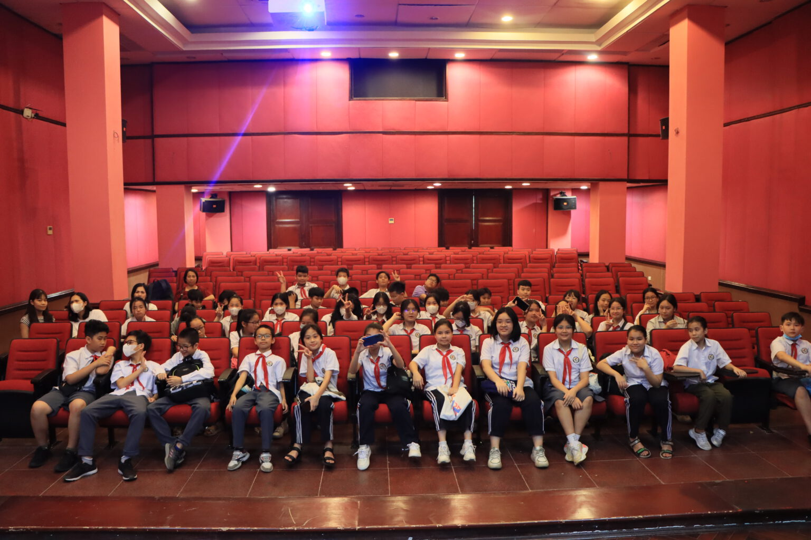

Trong bài
Tham quan bảo tàng không chỉ là cơ hội tìm hiểu lịch sử, văn hóa và văn học mà còn là cách mỗi người góp phần gìn giữ những giá trị được lưu lại qua nhiều thế hệ. Trước khi đến Bảo tàng Văn học Việt Nam, du khách nên nắm rõ một số quy định và lưu ý cần thiết để chuyến tham quan diễn ra thuận lợi, văn minh và tôn trọng không gian di sản.
Vì sao cần tuân thủ quy định khi tham quan bảo tàng?

Bảo tàng là nơi lưu giữ những tài liệu, hiện vật và di sản có giá trị về lịch sử, văn hóa và nghệ thuật. Mỗi hiện vật được trưng bày không đơn thuần là một món đồ cổ mà còn chứa đựng thông tin về một thời kỳ, một nhân vật hoặc một câu chuyện trong quá trình phát triển của xã hội.
Tại Bảo tàng Văn học Việt Nam, hệ thống trưng bày giới thiệu nhiều tư liệu và hiện vật gắn với lịch sử văn học dân tộc. Bên cạnh sách, bản thảo, hình ảnh, tài liệu, bảo tàng còn lưu giữ nhiều kỷ vật của các nhà văn, nhà thơ và những hiện vật có giá trị đặc biệt.
Do đó, việc tuân thủ quy định khi tham quan bảo tàng có ý nghĩa quan trọng trong việc bảo vệ hiện vật cũng như duy trì môi trường tham quan phù hợp cho tất cả mọi người.
Một hành động tưởng như nhỏ như chạm tay vào hiện vật, sử dụng đèn flash không đúng nơi quy định hay nói chuyện quá lớn cũng có thể ảnh hưởng đến hiện vật và trải nghiệm của những người xung quanh.
Tuân thủ nội quy không chỉ là trách nhiệm của du khách mà còn thể hiện sự tôn trọng đối với lịch sử, văn hóa và những giá trị mà bảo tàng đang gìn giữ.
Những quy định cần biết khi tham quan Bảo tàng Văn học Việt Nam
Trước khi bắt đầu chuyến tham quan, bạn nên tìm hiểu một số quy định cơ bản để chủ động hơn trong quá trình khám phá các khu trưng bày.

Không tự ý chạm vào hiện vật
Đây là một trong những quy định quan trọng nhất khi tham quan bảo tàng. Du khách không nên tự ý chạm tay vào hiện vật, tài liệu, mô hình hoặc các đồ vật được đặt trong khu vực trưng bày nếu chưa có sự cho phép.
Một số hiện vật có tuổi đời lâu năm và được bảo quản trong điều kiện đặc biệt. Tác động từ tay người, độ ẩm, mồ hôi hoặc những va chạm không mong muốn có thể làm ảnh hưởng đến tình trạng của hiện vật.
Ngay cả khi hiện vật được đặt ở vị trí không có tủ kính hoặc rào chắn, người tham quan cũng nên giữ khoảng cách an toàn và chỉ quan sát bằng mắt.
Không tự ý di chuyển đồ vật trong khu trưng bày
Du khách không được tự ý di chuyển, thay đổi vị trí hoặc tác động vào các hiện vật, vật dụng và thiết bị phục vụ trưng bày.
Mỗi hiện vật được bố trí tại một vị trí cụ thể nhằm tạo nên tổng thể nội dung của từng khu vực. Việc di chuyển đồ vật có thể gây hư hỏng hoặc làm ảnh hưởng đến cách thức tổ chức không gian.
Nếu muốn tìm hiểu kỹ hơn về một hiện vật, bạn có thể đọc phần chú thích hoặc hỏi cán bộ phụ trách thay vì tự ý tiếp cận.
Giữ trật tự trong không gian bảo tàng
Bảo tàng là không gian văn hóa và học tập, vì vậy du khách nên giữ âm lượng vừa phải trong suốt quá trình tham quan.
Đặc biệt, nếu đi theo nhóm đông người, nên hạn chế nói chuyện lớn tiếng, chạy nhảy hoặc tạo tiếng ồn tại các phòng trưng bày. Điều này vừa giúp bảo vệ không gian chung, vừa tạo điều kiện để những du khách khác có thể tập trung tìm hiểu nội dung.
Đối với trẻ em, người lớn nên hướng dẫn các em cách tham quan bảo tàng và nhắc nhở khi cần thiết.
Tuân thủ quy định về chụp ảnh, quay phim
Chụp ảnh là một hoạt động phổ biến khi đến bảo tàng, đặc biệt với những không gian có giá trị thẩm mỹ và nhiều hiện vật đặc sắc. Tuy nhiên, không phải khu vực nào cũng có quy định giống nhau về việc chụp ảnh và quay phim.
Trước khi sử dụng máy ảnh hoặc điện thoại, bạn nên quan sát biển báo và hướng dẫn tại khu vực trưng bày. Nếu có yêu cầu không chụp ảnh, quay phim hoặc không sử dụng đèn flash, du khách cần thực hiện đúng quy định.
Đối với những khu vực được phép chụp ảnh, cũng nên tránh đứng quá lâu hoặc chắn lối đi của những người khác.
Nếu có nhu cầu sử dụng hình ảnh, video của bảo tàng cho mục đích thương mại, truyền thông hoặc xuất bản, bạn nên liên hệ với đơn vị quản lý để tìm hiểu quy định cụ thể thay vì tự ý sử dụng.
Những lưu ý về sinh hoạt và ứng xử trong bảo tàng

Bên cạnh việc bảo vệ hiện vật, cách ứng xử của du khách cũng góp phần tạo nên một môi trường tham quan văn minh.
Không mang thức ăn, đồ uống vào khu trưng bày
Thức ăn và đồ uống có thể gây ảnh hưởng đến hiện vật nếu xảy ra tình trạng đổ, rơi hoặc phát sinh chất thải. Vì vậy, du khách nên sử dụng đồ ăn, thức uống ở những khu vực được phép và không mang vào phòng trưng bày nếu bảo tàng có quy định hạn chế.
Đặc biệt, không nên đặt đồ uống hoặc các vật dụng cá nhân lên tủ trưng bày, bục giới thiệu hay khu vực gần hiện vật.
Không hút thuốc
Du khách cần tuân thủ quy định về việc không hút thuốc trong khu vực bảo tàng và các không gian có biển cấm.
Khói thuốc không chỉ ảnh hưởng đến những người xung quanh mà còn có thể tác động không tốt đến môi trường bảo quản các tài liệu, hiện vật.
Giữ vệ sinh chung
Mỗi người tham quan cần có ý thức giữ gìn vệ sinh trong toàn bộ khuôn viên bảo tàng. Rác thải nên được bỏ đúng nơi quy định, không để lại giấy, chai nước hoặc các vật dụng cá nhân tại khu vực trưng bày.
Giữ vệ sinh cũng là cách đơn giản để bảo vệ cảnh quan và duy trì hình ảnh đẹp của một địa điểm văn hóa.
Trang phục lịch sự
Bảo tàng là không gian văn hóa, giáo dục và nghiên cứu. Vì vậy, du khách nên lựa chọn trang phục lịch sự, phù hợp với môi trường tham quan.
Đặc biệt với các đoàn học sinh, sinh viên hoặc đoàn khách tham quan theo chương trình, việc giữ tác phong nghiêm túc sẽ giúp chuyến đi diễn ra thuận lợi và tạo hình ảnh đẹp cho tập thể.
Lưu ý khi tham quan theo nhóm và phục vụ học tập

Bảo tàng Văn học Việt Nam là địa điểm phù hợp cho các hoạt động tìm hiểu văn học, lịch sử và văn hóa. Nhiều trường học, nhóm sinh viên hoặc những người nghiên cứu có thể lựa chọn bảo tàng làm điểm đến cho các chuyến tham quan thực tế.
Nếu đi theo nhóm đông người, bạn nên chuẩn bị trước một số thông tin như số lượng thành viên, thời gian dự kiến đến và mục đích tham quan.
Chủ động liên hệ khi đi theo đoàn
Với các đoàn đông người, việc liên hệ trước với bảo tàng giúp đơn vị quản lý chủ động hơn trong việc đón tiếp và hướng dẫn.
Nếu chuyến đi phục vụ hoạt động học tập hoặc nghiên cứu, bạn cũng có thể trao đổi trước về nhu cầu tìm hiểu tư liệu, chụp ảnh hoặc ghi chép thông tin.
Việc chuẩn bị trước đặc biệt cần thiết nếu đoàn có số lượng lớn hoặc muốn thực hiện hoạt động chuyên môn trong khuôn viên bảo tàng.
Hướng dẫn trẻ em trước khi tham quan
Đối với gia đình có trẻ nhỏ, người lớn nên giải thích trước một số nguyên tắc cơ bản như không chạm vào hiện vật, không chạy nhảy và giữ âm lượng vừa phải.
Một chuyến tham quan bảo tàng sẽ trở nên ý nghĩa hơn nếu trẻ được hướng dẫn cách quan sát, đọc thông tin và đặt câu hỏi về những gì mình nhìn thấy.
Thay vì chỉ yêu cầu trẻ “không được chạm vào”, phụ huynh có thể giải thích rằng các hiện vật này là những dấu tích quý giá cần được bảo vệ để nhiều thế hệ sau vẫn có cơ hội tìm hiểu.
Chuẩn bị trước nội dung muốn tìm hiểu
Nếu đến bảo tàng với mục đích học tập, bạn nên xác định trước những chủ đề hoặc tác giả muốn tìm hiểu.
Bảo tàng giới thiệu lịch sử văn học Việt Nam qua nhiều giai đoạn, vì vậy việc có một định hướng trước sẽ giúp bạn tập trung hơn khi tham quan. Bạn có thể chuẩn bị sẵn sổ ghi chép hoặc thiết bị để lưu lại những thông tin được phép ghi nhận.
Cách chuẩn bị này đặc biệt hữu ích với sinh viên ngành văn học, báo chí, xuất bản, truyền thông hoặc những người đang thực hiện bài tập, nghiên cứu liên quan đến văn hóa và văn học Việt Nam.
Kinh nghiệm để có chuyến tham quan văn minh và trọn vẹn
Tuân thủ nội quy bảo tàng không đồng nghĩa với việc chuyến tham quan trở nên cứng nhắc. Ngược lại, khi mỗi người có ý thức chung, không gian bảo tàng sẽ trở nên thoải mái và dễ tiếp cận hơn.
Trước khi đến, bạn nên kiểm tra giờ mở cửa, địa chỉ và những thông tin mới nhất về hoạt động của bảo tàng. Nếu đi theo đoàn, nên liên hệ trước để được hướng dẫn.
Trong quá trình tham quan, hãy dành thời gian đọc phần giới thiệu bên cạnh từng hiện vật. Những dòng thông tin này giúp kết nối hiện vật với bối cảnh lịch sử và câu chuyện về tác giả, tác phẩm.
Bạn cũng không cần cố gắng xem tất cả mọi thứ thật nhanh. Một chuyến tham quan hiệu quả nên có thời gian để quan sát, đọc, ghi chép và suy ngẫm về những giá trị văn hóa được giới thiệu.
Cuối cùng, hãy nhớ rằng mỗi du khách đều góp phần tạo nên trải nghiệm chung tại bảo tàng. Giữ trật tự, bảo vệ hiện vật, giữ vệ sinh và tôn trọng những người xung quanh chính là những cách đơn giản nhất để thể hiện sự văn minh khi tham quan.
Nắm rõ quy định tham quan Bảo tàng Văn học Việt Nam giúp du khách chủ động chuẩn bị và có trải nghiệm trọn vẹn hơn. Không chạm vào hiện vật, giữ trật tự, tuân thủ quy định chụp ảnh, giữ vệ sinh và tôn trọng không gian chung là những nguyên tắc cơ bản cần ghi nhớ. Mỗi hành động đúng của du khách đều góp phần bảo vệ những giá trị văn học, lịch sử và văn hóa được lưu giữ cho các thế hệ mai sau.
Bảo tàng Văn học Việt Nam